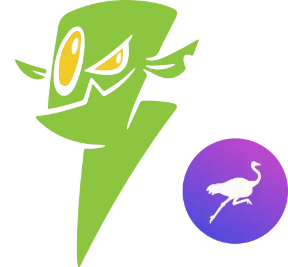
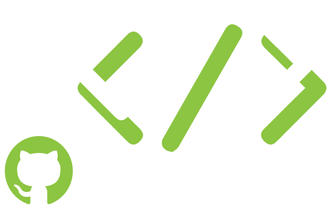

Acerca de Mostro
Mostro, un proyecto de vanguardia, desarrolla un enfoque revolucionario para facilitar las transacciones de Bitcoin a través de Lightning Network. El proyecto aborda la creciente demanda en la compra y venta de Bitcoin sin comprometer los datos personales, presentando una solución innovadora para intercambios entre pares.
Mostro gestiona las comunicaciones sobre Nostr, lo que lo convierte en una plataforma descentralizada sin un único punto de falla. Este diseño mejora la resistencia a la censura en comparación con otras opciones existentes.

Documentación
Para saber más sobre Mostro visita nuestra documentación de usuario
Si eres desarrollador y quieres crear tu propio cliente de Mostro, puedes leer la documentación del protocol aquí
Donar
Mostro es FOSS, si encuentras útil el proyecto, considera hacer una donación para ayudarnos a desarrollarlo y mantenerlo a largo plazo. ¡Gracias!
Donar
¿Cómo funciona?
Mostro funciona como un depósito de garantía que permite al comprador y al vendedor intercambiar bitcoin de forma p2p reduciendo el riesgo para ambas partes, a la vez que solo custodia los Sats el tiempo mínimamente necesario. Utiliza un nodo Lightning Network, que crea las facturas retenidas para los vendedores y paga a los compradores facturas comunes de lightning.
Funciona dentro del protocolo Nostr por lo que los compradores y vendedores necesitarán los clientes de Mostro para poder comprar/vender Bitcoin. Los usuarios podrán calificar a los Mostros, que competirán para obtener más usuarios para poder sobrevivir. Los usuarios deberían rechazar los malos Mostros, que perderán incentivos para seguir existiendo.
Github

Preguntas Frecuentes
¿Qué es Mostro? ¿Es una app?
Mostro no es una app, es un protocolo para intercambiar Bitcoin de forma peer-to-peer usando Lightning Network y Nostr. El protocolo define las reglas y mensajes que permiten a dos personas intercambiar bitcoin sin intermediarios. Para usar Mostro necesitas un cliente, que puede ser una app móvil, una aplicación de escritorio o una interfaz de línea de comandos.
La confusión es común porque existen apps que implementan el protocolo Mostro, pero esas apps no son Mostro: solo son una forma de interactuar con él. Pensar que Mostro es una app es como pensar que Bitcoin es una wallet. Mostro tampoco es una blockchain ni una capa adicional (L2 o L3) de Bitcoin, ni crea un nuevo sistema monetario: se limita exclusivamente a coordinar intercambios P2P de bitcoin utilizando infraestructura existente.
¿Necesito registrarme o verificar mi identidad?
No. Mostro no requiere registro, email, teléfono ni ningún tipo de KYC. Tu identidad se genera automáticamente en el cliente que uses y solo tú la controlas mediante una frase de recuperación de 12 palabras.
¿Cómo me protege Mostro si mi contraparte intenta estafarme?
Los sats del vendedor quedan retenidos en su wallet mediante una hold invoice hasta que confirme haber recibido el pago fiat. Si surge un problema, cualquiera de las partes puede abrir una disputa y un mediador revisará el caso. Además, el chat entre usuarios no puede ser borrado ni alterado, lo que permite verificar qué ocurrió realmente durante la operación.
¿Mis operaciones son privadas?
Sí. Toda la comunicación está cifrada de extremo a extremo. Mostro usa claves diferentes para cada operación, lo que impide vincular tus intercambios entre sí. Incluso puedes operar en un modo de privacidad avanzada en el que ni el propio nodo de Mostro puede saber qué operaciones te pertenecen. Los operadores de nodos de Mostro tampoco tienen acceso a ninguna información personal de los usuarios.
¿Qué pasa si tengo un problema con mi teléfono durante una operación?
Si tu teléfono se apaga, se rompe, lo pierdes o te lo roban durante una operación, puedes recuperar el control solo si tienes respaldo de tu frase de recuperación. Restaurando esa frase en otro dispositivo vuelves a tener acceso a tus claves y puedes continuar la operación.
Sin ese respaldo, no hay forma de recuperar la sesión ni los fondos asociados, porque Mostro no tiene cuentas, soporte central ni mecanismos de recuperación. Por eso es crítico hacer el backup antes de iniciar tu primera operación.
¿Qué hace diferente a Mostro de otros exchanges P2P?
Tres diferencias fundamentales:
Resistencia real a la censura
Mostro no es una plataforma ni una empresa: es un protocolo. No hay un servidor central que apagar, ni una app que "bajar", ni una base de datos que confiscar. Funciona sobre Nostr, un protocolo abierto y descentralizado. Si un relay deja de funcionar, se usa otro. Si un nodo desaparece, el protocolo sigue existiendo y otros nodos pueden seguir operando. Mostro no puede ser deshabilitado como un servicio porque no es uno.
Privacidad por diseño, no como opción
No existen cuentas, correos electrónicos ni identidades persistentes. Cada operación usa claves distintas y el intercambio de mensajes ocurre mediante chat cifrado de extremo a extremo. No hay un historial global ni una entidad capaz de correlacionar tus intercambios. La privacidad no depende de la buena fe de un operador: está impuesta por la arquitectura.
Custodia mínima y no permanente
Mostro no mantiene fondos de los usuarios. Utiliza hold invoices de Lightning: los sats permanecen bloqueados en la wallet del vendedor hasta que este confirma la recepción del fiat. Solo en ese momento, los fondos pasan de forma transitoria y automática por el nodo Lightning del nodo de Mostro conectado, para ser enviados inmediatamente al comprador.
¿Cuánto cobra Mostro por cada operación?
Cada operador de un nodo de Mostro define sus propias tarifas. Generalmente son bajas (por ejemplo, alrededor de 0.3% para comprador y vendedor). Antes de operar, revisa siempre las tarifas del nodo que elijas.
¿Qué monedas y métodos de pago acepta Mostro?
Depende de cada nodo de Mostro. Los operadores deciden qué monedas fiat soportan y los usuarios deciden el método de pago (transferencia bancaria, efectivo, pago móvil, etc.). Mostro no interviene en el intercambio de fiat, solo coordina el intercambio de sats.
¿Existe un solo nodo de Mostro o hay varios?
Hay varios. Mostro es el protocolo, y cada nodo de Mostro es una implementación independiente que lo ejecuta. Cualquiera puede operar su propio nodo, con sus propias tarifas, monedas soportadas y reglas operativas. No existe un nodo central u oficial: si un nodo deja de funcionar, otros siguen disponibles y el protocolo continúa operando sin interrupciones.
¿Por qué existen varios nodos de Mostro en lugar de uno solo?
Porque la descentralización es lo que hace al sistema resistente a la censura. Si existiera un único nodo, bastaría con cerrarlo o bloquearlo para detener todo el intercambio. Al haber múltiples nodos operados por personas distintas y en diferentes jurisdicciones, no existe un punto único de falla. Además, esta diversidad introduce competencia: mejores tarifas, mejor servicio y más opciones para los usuarios, que pueden decidir con qué nodo interactuar.
¿Cómo empiezo a usar Mostro?
Descarga un cliente de Mostro, haz backup de tu frase de recuperación de 12 palabras y listo. Puedes crear una orden de compra o venta, o tomar una orden existente del libro de ofertas. Solo necesitas una wallet Lightning para enviar o recibir sats.
¿Quiero correr mi propio nodo de Mostro, por dónde empiezo?
Mostro es software libre y cualquiera puede operar su propio nodo. Necesitarás un servidor, un nodo de Lightning Network (LND) y acceso a relays de Nostr. La documentación técnica completa está disponible en el repositorio oficial de GitHub de Mostro, con guías de instalación paso a paso. Si formas parte de una comunidad Bitcoin local, correr tu propio nodo puede ser una forma directa de ofrecer intercambio P2P sin intermediarios a tus usuarios.

Síguenos